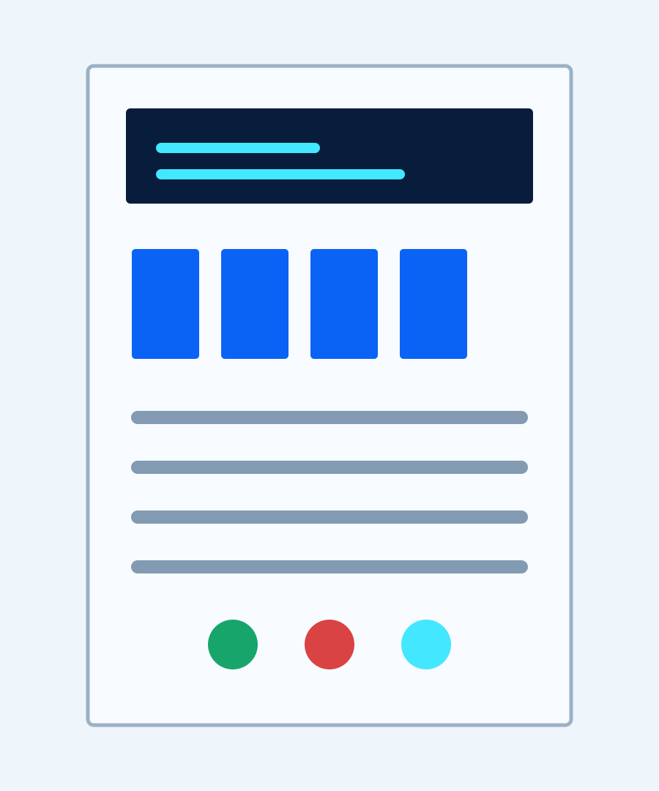
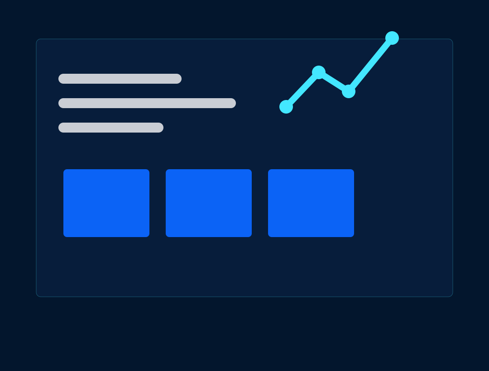
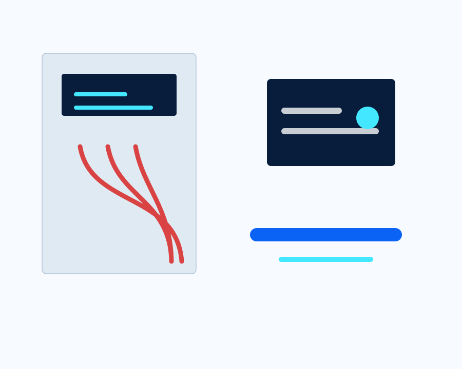
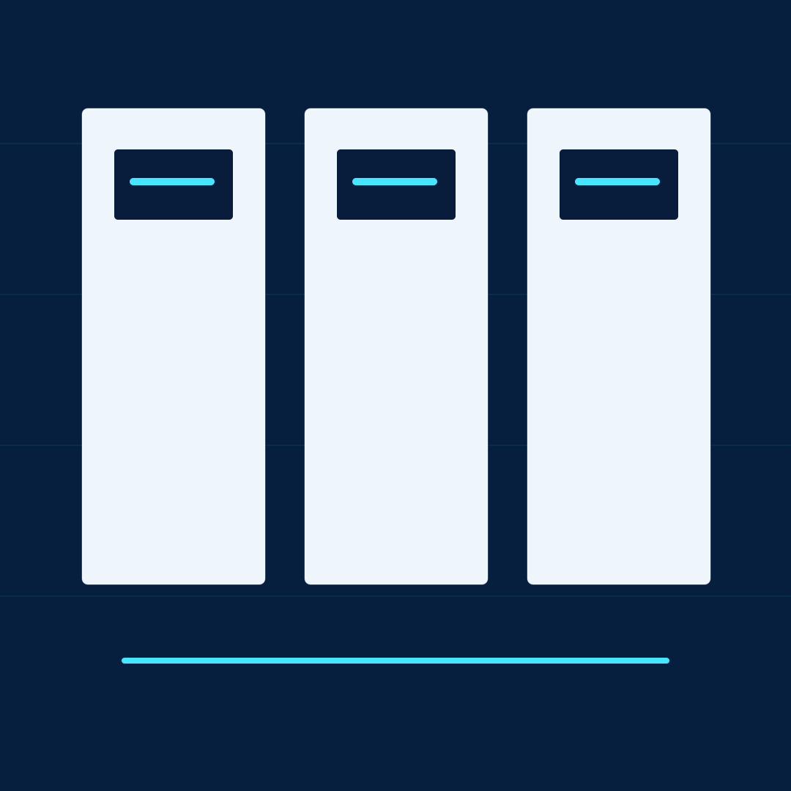
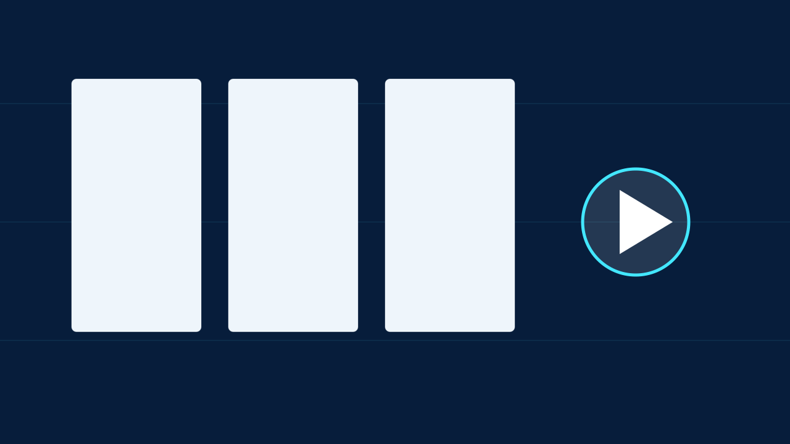
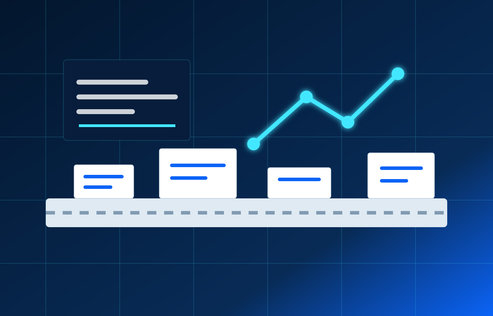

Dağıtım Panosu
Modern pano içi düzen ve kontrol noktaları.

Masonry grid, kategori filtreleme, hover zoom, lightbox ve video popup sistemiyle modern medya vitrini.
Görseller lazy loading ile yüklenir; kategori filtreleri ve popup izleme sistemi tüm ekranlarda akıcı çalışır.

Modern pano içi düzen ve kontrol noktaları.

Veri odaklı kontrol mimarisi.

Kablolama ve saha ölçüm çalışmaları.

Dağıtım ve kontrol panosu uygulaması.

Arıza tespiti ve bakım operasyonu.
Elektrik pano ürünleri için video alanı.

Montaj ve devreye alma süreci vitrini.

Endüstriyel kontrol ve izleme sistemi.